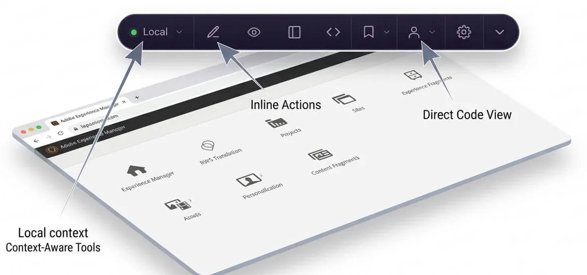

Free Chrome extension · MIT · not an Adobe product
AEM toolbar,
one click away
Toolbar AEM is a free Chrome extension that adds a floating toolbar to Adobe Experience Manager pages. Jump between Editor, View, Sites and CRXDE, and between Local, Dev, QA and Stage, without retyping URLs. The content path stays the same.
One click · same path · any environment

Concept
Stop rebuilding AEM URLs by hand
Checking one page in the Editor, then published, then on Stage, then its node in CRXDE means editing the URL four times. Toolbar AEM rewrites it for you and keeps the content path.
Open any AEM page
The toolbar appears on localhost, AEM Cloud hosts and every environment you configure.
Pick a console or environment
Edit, View, Sites, CRXDE, or Local, Dev, QA, Stage: one click each.
Land on the same content
The same content path opens in the target console and environment, with the right URL shape.

Features
What Toolbar AEM does
Console switching
Open the current page in Editor, View, Sites or CRXDE. View can add
wcmmode=disabled.Environment switching
Reopen the same console and content path on Local, Dev, QA, Stage or any environment you define.
A favicon per environment
Each tab gets the colour of its environment, so Stage never passes for Local.
Bookmarks
Shortcuts to the paths you use most. A bare path opens on the current environment.
“Go to path” button
Next to Granite UI path fields: opens the typed path in Assets, Experience Fragments, Sites or CRXDE.
Team settings and plugins
Export settings as JSON, or ship project bookmarks and console rules in a plugin file.
Try it
Try the toolbar
Pick another environment or console and watch the URL change. The content path stays.
Install
How to install Toolbar AEM in Chrome
Toolbar AEM is not on the Chrome Web Store. You install it as an unpacked extension, in four steps and about two minutes.
Needs Google Chrome with Developer mode turned on in the extensions page. No account, no build step.
-
Download the repository
Download the ZIP and unzip it, or clone it with git.
git clone https://github.com/nandomunoz/toolbar-aem.git -
Open the extensions page and turn on Developer mode
Paste this in the address bar, then switch on Developer mode, top right.
chrome://extensions -
Click “Load unpacked” and pick the folder
Select the
extensionfolder of the unzipped or cloned repository: the one that containsmanifest.json. -
Set up your environments
Click the extension icon to open the options page. Add the author URL of each environment, save, and reload your AEM tabs.
To update: download or pull the new version into the same folder and click the reload icon of Toolbar AEM in chrome://extensions.
Configure
Where the toolbar shows up
Toolbar AEM appears on localhost, on adobeaemcloud.com and aemcloud.net hosts, and on the exact host of every environment you add. For AMS or on-premise, adding the environment is all it takes.
| AEM setup | Toolbar shows | URLs it builds |
|---|---|---|
| AEM as a Cloud Service | Automatically | Unified shell: /ui#/aem/editor.html/… |
Local SDK (localhost:4502) | Automatically | Classic: /editor.html/… |
| AMS or on-premise | Once added as an environment | Classic: /editor.html/… |
Settings are saved with chrome.storage.sync, so they follow your Chrome profile. Teams can share them as a JSON file or ship their own defaults in default-config.json.
Privacy
No data collected, no requests made
Toolbar AEM collects no data, has no analytics and makes no network requests of its own. No CDNs, no remote fonts, no remote code.
storageSaves your settings in your Chrome profile.<all_urls>Your environments can live on any host. On any other host the script exits without touching the page.
FAQ
Questions about Toolbar AEM
Is Toolbar AEM free?
Yes. Toolbar AEM is free and open source under the MIT License, including for commercial projects, as long as the copyright notice is kept.
Is Toolbar AEM on the Chrome Web Store?
No. Toolbar AEM is installed as an unpacked extension from its GitHub repository: download it, turn on Developer mode in chrome://extensions and click “Load unpacked”. See how to install it.
Is Toolbar AEM an Adobe product?
No. Toolbar AEM is an independent community tool. It is not developed, sponsored, endorsed or supported by Adobe, and it contains no Adobe code.
Does it work with AEM on-premise or AMS, not only Cloud Service?
Yes. Toolbar AEM works with AEM as a Cloud Service, AMS, on-premise and the local SDK. For AMS and on-premise, add the instance as an environment in the options page and the toolbar appears there.
Can my team share the same environments and bookmarks?
Yes. Export the settings as a JSON file and import it on another machine, or edit default-config.json and add a plugin with the team's bookmarks and console rules. Do not put anything confidential in default-config.json: it is a web-accessible resource.
Will the toolbar show up in Lighthouse audits or test screenshots?
No. Toolbar AEM does not show in automated browsers such as Lighthouse or WebDriver.
Can I hide the toolbar and keep only the coloured favicons?
Yes. Turn off “Show the toolbar” in the options page; the favicon per environment keeps working. You can also start it collapsed or move it to the top of the page.
Download
Less retyping,
more AEM
Free, open source, installed in four steps.